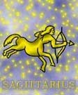

<html>
<head>
<title>Nyilas</title>
<script type="text/javascript" src="js/public.js"></script>
<script type="text/javascript" src="js/subpage.js"></script>
<script language="JavaScript1.1">
IMG_PICT="images/inte/horo/" 
horopict = ""
var subpage = new Array(
horopict+"A Nyilast kentaurként ábrázolják, ami jellemzõ rá, egymásnak ellentmondó személyiség, röghöz kötött és fantaszta. Õszinte, nyílt, de kiszámíthatatlan. Gyakran egy hirtelen ötlettõl vezérelve olyat tesz, amit senki nem vár tõlük. Nagy idealista, új eszmékért végtelenül tud lelkesedni, ez hamar alább hagy. Szalmaláng természetû, vitákban, veszekedésekben, hamar méregbe gurul, de egyik percrõl a másikra el is múlik haragja, de ez csak az apró dolgokra vonatkozik, a komolyabb csalódások lelki sérülését sokáig viselik. Igazságszeretõ, gyengébbeket védi, nagy állatbarát. Emberi kapcsolataiban megérzéseire hallgat, mert nincs türelme másokat meghallgatni, a saját hangját imádja. Beszédkészsége kitûnõ, jó szónok. A változatosságot is nagyon kedveli, utazás a szenvedélye. Társasága szórakoztató, kellemes, de egy idõ után fárasztóvá válik, Jól ért ahhoz, hogy másokat észrevétlenül kihasználjon, maga helyett szeret másokkal dolgoztatni. Szerelemben is könnyen lelkesedik, gyorsan lángra gyúl, de az egyik percrõl a másikra el is hidegül, nem házasodik hamar. Mozgékony, szívós, szeret a sportolni. Tûz jegy, pozitív töltés, változó minõség. A Nyilas õsi ábrázolása: alul ló, felül íját feszítõ, Napot célzó ember, utal a jegy természetére. Az állati rész a földhöz, az anyaghoz kötött, az emberi rész fantaszta, hiszen a Napot célozza. ",
horopict+"Ebbõl úgy látszik, mintha a Nyilas ember életének célja a nagy távolságok legyõzése, áthidalása lenne. Uralkodó bolygója a Jupiter, mely hangsúlyozza a szétterjedésre valló képességét. Jelzi, hogy a Nyilas mindig kész ismeretei bõvítésére, látóköre kiszélesítésére, tapasztalatok szerzésére, s teszi ezt emberszeretõ, optimista módon. A tüzes elemekhez, változó tulajdonságokhoz tartozó, pozitív töltésû. Tüzes természetére nézve azt állapíthatjuk meg, hogy - a valódi tûz analógiáját véve alapul - vagy aktívan ég, lobog, melegít, elbûvöl, vagy mint a tûzvész elhamvaszt, ott égetve ahol nem kellene. A \"tüzes\" ember heves, lelkes nagyra törõ, aki égni tud erõs érzelmekkel, heves izgalommal, s másokat is lángra lobbant. Vidámságot, derût, életigenlést sugároz magából. Tüzes természete megnyilvánul bátor magatartásában és uralkodni vágyásában is. Ugyanakkor a változó tulajdonságnak megfelelõen változékony, egyúttal változatosságot kedvelõ is, s él benne a hajlam, hogy másokért cselekedjen. A pozitív töltést úgy is említik, mint \"férfiasság\"-ot. Az ilyen típusú emberek számára különösen fontos az önkifejezés. Szellemi érdeklõdése széleskörû. Nemcsak intellektuális, hanem intelligens is. A magasabb rendû szellemi dolgok felé tör. Alapvetõ képessége, hogy a valóságot átfogóan szemlélje. Szelleme az intellektuson túli dolgok, a transzcendens felé szárnyal nyitott szívvel, hittel. ",
horopict+"Keresi, kutatja az Isten, a természet, a társadalom törvényeit. A törvényt tiszteli, de lázad, ha az eszményt, a humánumot, a szabadságot veszély fenyegeti. A törvénytelenség felháborítja, s a zsarnokságot nem viseli. Elsõrendû érzéke van, hogy a jogot a jogtalanságtól megkülönböztesse. Szavaiban, tetteiben õszinte és nyílt, becsületes. Bízik önmagában és ugyanilyen bizalommal fordul mások felé. A nemes humánus eszmék fellelkesítik, de változékony természetének megfelelõen lobogó lángja egy idõ után lelohad. Optimizmusa azonban töretlen, s hisz abban, hogy az eszmények felé törekvés meghozza gyümölcsét. Cselekedeteiben a segítség szándéka vezérli, jóindulatú és joviális. A jóság olyannyira elvakítja, hogy a nyilvánvaló negatív tényeket sem látja meg. Ez lehet az alapja, hogy így emberismerete nem a legjobb. A magasrendû típus rendkívül emberszeretõ és szociális érzékû, az üldözöttek védelmében, az igazságtalanul mellõzöttek érdekében minden erejét latba veti, s kitûnõen ért ahhoz, hogy másokat is hívjon és rábeszéljen a segítségnyújtásra. A Nyilas ember alaptermészetéhez tartoznak a túlzások. Mikor eszméirõl, élményeirõl, képességeirõl beszél, felmagasít, megszépít. Éppígy eltúlozza munkakedvét, vállalkozó hajlamát. Mindezek hátterében az húzódhat meg, hogy szereti önmagát az élen tudni. Meggyõzõdése, hogy amit tesz és gondol, az úgy helyes, jó és ésszerû. ",
horopict+"Ezért szívesen beszél véleményérõl, hozzáállásáról -szinte saját hangjától elbûvölve- viszont a másik meghallgatásához kevés a türelme. Nagyszerû beszélõképességével lelkesedésével könnyedén meggyõz másokat igazáról. Képes rá, hogy még abban is kétséget támasszon, aki biztosan tudja, hogy nincs igaza. Ítéleteiben, elhatározásaiban inkább az érzés vezérli, mint az értelem. Ennek tudható be, hogy sokszor elhamarkodottan dönt. Általában intuíciója alapján jár el mindenben. Valódi életmûvész, aki ki tudja élvezni az élet felkínált lehetõségeit. Derûs, kedélyes természetével, szerepelni vágyásával és kiváló beszédkészségével általában a társaság lelkévé válik. Víg kedélyû, megértõ, jó barát, aki barátjáért önfeláldozásra is kész, -ezt néha nehezen is értik meg. Kitûnõ társ, jó partner. Legfõbb jellegzetessége, hogy lovagias társával szemben. Sok benne az érzés és a lelkesedés, hamar lángra gyúl. Szabadságérzete igen erõs, ezért bölcs partner jól teszi, ha \"hosszú gyeplõre\" engedi. Szerelmében odaadó és ragaszkodó. Partnerkapcsolatban is fontos számára a barátság, olyannyira, hogy még a partneri viszony megszakadása után is törekszik a baráti kapcsolat fenntartására. Akkor válik harmonikussá, ha mind a szellemi, mind a fizikai képességei kielégítést nyernek. Szívesen sportol, kirándul. Az állatok közül fõleg a lóhoz vonzódik. ",
horopict+"Érdeklik az érdekes témájú elõadások, a komoly természetû tanulmányok. Természetes jellemvonásainak gátját okozza, ha túl nyugalmas életre kényszerítik, vagy tevékenységi körét leszûkítik. Ezek ellenhatásaként temperamentum kitörésekkel reagálhat, vagy mogorvasággal. Túlságosan szétterjedõ típus, aki könnyen hízásnak indulhat, könnyelmûvé és pazarlóvá válhat. Elõfordulhat, hogy túllõ a célon. Türelmetlenségében, ha nem sikerül célját az elsõ nekifutásra megvalósítani, könnyen feladja a harcot. A végletes változatosság-szeretet állhatatlansághoz vezethet. A lóhalálában vágtató típus túlságosan felületes, végletes lehet. ",
horopict+"<b>Bolygója:</b> a Jupiter<br>"
+"<b>Eleme:</b> a tûz<br>"
+"<b>Természete:</b> mozgékony<br>"
+"<b>Erényei:</b> nyílt, segítõkész, nagyvonalú, igazságszeretõ, fantázia dús<br>"
+"<b>Hibái:</b> fecsegõ, felületes, túlzó, konzervatív, nem tud titkot tartani<br>"
+"<b>Testrésze:</b> a csípõ és comb<br>"
+"<b>Betegségre való hajlam:</b> köszvény, érszûkület, idegfájdalmak, migrén, izületi gyulladás<br>"
+"<b>Védõkövek:</b> zafír, türkíz, kalcedon<br>"
+"<b>Szerencsekövek:</b> lapis lazuli, kalcedon- kékeslila-, topáz, krizopráz"
);
</script>
</head>
<BODY background="images/public/background/bg1.jpg">
<script language="JavaScript1.1">
	firstdraw("NYILAS november 23. - december 21.");
</script>
</body>
</html>